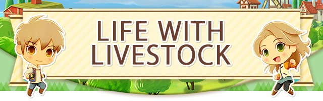
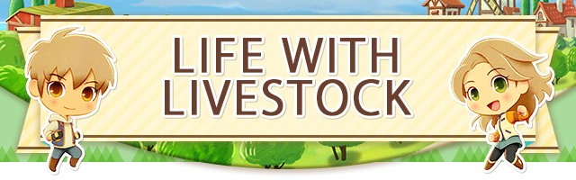

If you want to keep animals of your own, you'll need special facilities to do so. To gain access to these facilities, you'll first need to repair the dilapidated barn and dilapidated coop. Once you do, you can buy more at Nigel's Handiworks. If you're looking for some new animal friends, you can try and tame the animals roaming your farmland, or you can buy animals you've already tamed from the Hoof House Animal Shop. You're free to name the facilities and animals whatever you'd like!
Give Fodder, Receive Byproducts
If you leave fodder in a barn or coop's feed bin, the animals there will eat it all on their own. Once they do, you'll be able to gather byproducts like milk and eggs from them the following day, though byproducts like sheep and alpaca wool will take a few days to grow back between each shearing.
Friendship & Happiness
Animals have both friendship and happiness levels to take into account. Friendship affects the quality of the byproducts you receive from your animals, while happiness increases your chances of getting more of the same byproduct in one day. These levels can be increased by feeding and petting your animals daily.
- Putting Animals Out to Pasture
-
If you ring the bell outside of an animal facility on a sunny day, the animals inside can be put out to pasture. While they're out grazing, they won't need any feed, which can save you quite a lot of fodder! Just keep in mind that you can't put animals out to pasture late at night or when the weather is poor!
Renovating your house and building a stable will let you keep pets, including ones you can ride on! You're free to name pets and mounts whatever you'd like. They may not have any byproducts to give, but they're sure to enhance your life on the farm.
Owning Pets
As you expand your house, you'll be able to keep more pets at a time. Petting them and giving them treats will raise your friendship with them. By using the leash tool, you'll also be able to take your pets for walks!
Saddle Up!
In order to take care of a mount, you'll first need to repair the dilapidated stable. Subsequent stables can be purchased from Nigel's Handiworks if you'd like to own more than one mount. You may not be able to feed or pet them, but mounts are trusty animals who can take you where you need to go in no time flat!